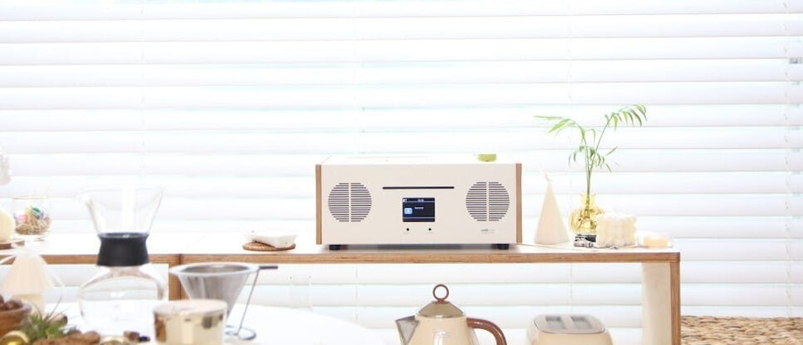

オシャレな音楽を

どんな部屋でもマッチするデザイン
あなたの部屋に新しいスパイスを加えてみませんか？
bluetoothスピーカー兼ワイヤレス充電器、ラジオも受信可能。
洗練されたデザインのデスクトップスピーカー「W401D」
【W401D】はオフィス、ショップ、そして家の中などどこに置いてもインテリアオブジェとして自然に溶け込むデザインのスピーカーです。おしゃれだけのスピーカーではなく、ハイクオリティーサウンドとワイヤレス充電機能などを搭載し、便利性からオリジナリティーまで、何一つ欠けのない製品です。

圧倒的多機能スピーカー
welleのデザイン哲学と音質に対するこだわりを溶け込んだ「W401D」は素敵なデザインと高音質、そして多様で便利な機能を搭載し、多くの方々にご満足いただけるような製品でございます。
ワイヤレス無線再生
デスクトップオーディオW401Dはワイヤレス再生ができるようにしました。最大10Mの距離からでも安定的な無線連結を安定的にペアリングが可能だと言われてます。また、SBC・AAC Codecを利用し、無線連結でより快適に安定的な高音質サウンドを楽しむことができます。
Wireless Wireless Playback
USBメモリの音源を再生
上段のUSBポートはFlash Driveの中にある音源ファイルを再生できるポートです。ワイヤレス連結を利用してプレイしなくてもFlash Driveを利用し簡単に再生できます。下段のUSBポートは音源ファイルを読み取るポートではなく、USBケーブルを利用しスマホなどを充電できるUSB充電ポートであります。
Playback source USB memory
これまでにないテクノロジーお試しください。
モデル名：WT-W401D 素材：METAL/WOOD ワイヤレス再生 : バージョン5.0 / 最大10m USB再生フォーマット : MP3、WMA CD再生フォーマット：CD,CD-R/RW(Audio CD, MP3, WMA） USB有線充電：5V, 2.1A ワイヤレス充電：9V/1.1A(iOS) , 5V/2A(Android) オーディオ出力：40W 消費電力：53W Display：TFT2.9” 定格：15V 3A 規格：375x265x155㎜ 重量：6kg ラジオ周波数：76.00-90.00MHz